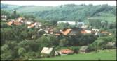
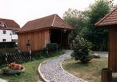
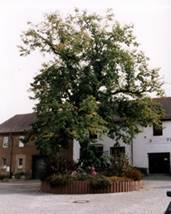

|
|
|
 Blick auf Großheringen
 Historische Hausbrücke
 Linde am Dorfanger |
Großheringen liegt direkt an der Mündung der Ilm in die Saale, 14 km nordöstlich der Kreisstadt Apolda. Der Ort "Heringa" wird 874 erstmalig, die Gemeinde Weichau wird 1349 (Wech) namentlich erwähnt. Im Jahr 1949 werden die Gemeinde Unterneusulza und Großheringen zur Gemeinde Großheringen zusammen geschlossen. Der Ortsteil Unterneusulza verdankt seine Entstehung dem Salinebetrieb. 1850 erfolgte die Planung der Eisenbahnlinie von Weißenfels nach Weimar, 1855 wurde mit dem Bau der Strecke und des Bahnhofs begonnen; 1858 waren die Arbeiten fertig gestellt. Durch die Baumaßnahme wurden viele Menschen ortsgebunden. Nach Beendigung der Arbeiten blieb ein großer Teil zurück. Sie fuhren mit der Eisenbahn in die sich immer mehr entwickelnden Industriestädte. Heute erfolgt eine Expansion des Mittelstandes und mit der Ansiedlung der Viega-Werke, die hier ca. 200 Menschen beschäftigen. Großheringen hat einen zweigeteilten Bahnhof mit etwas verkommenem Gebäude und drei Bahnsteigen auf der Erfurter Seite und zwei Bahnsteigen auf der Buttstädter.
|